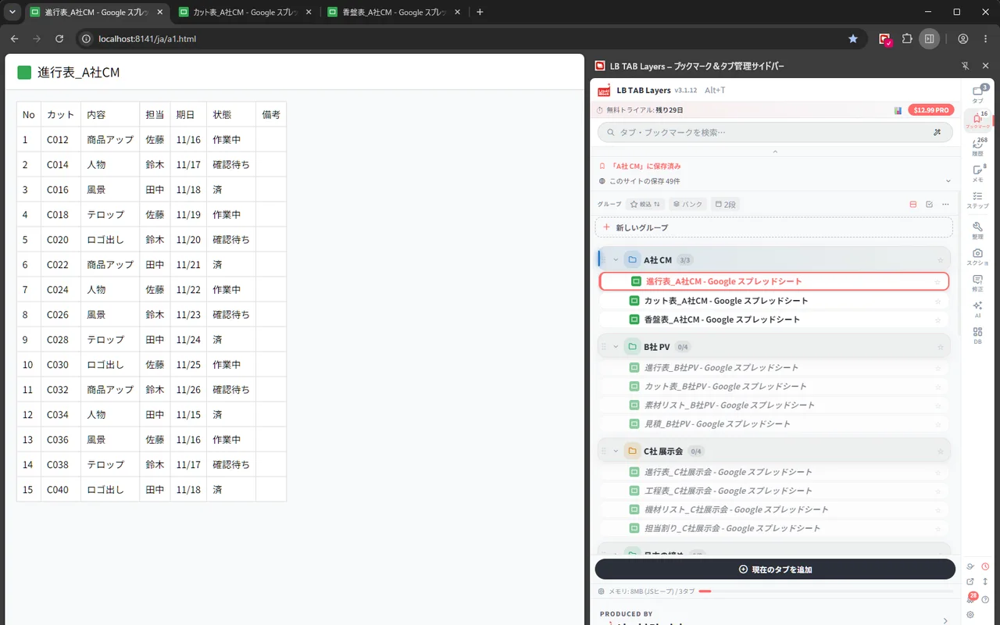
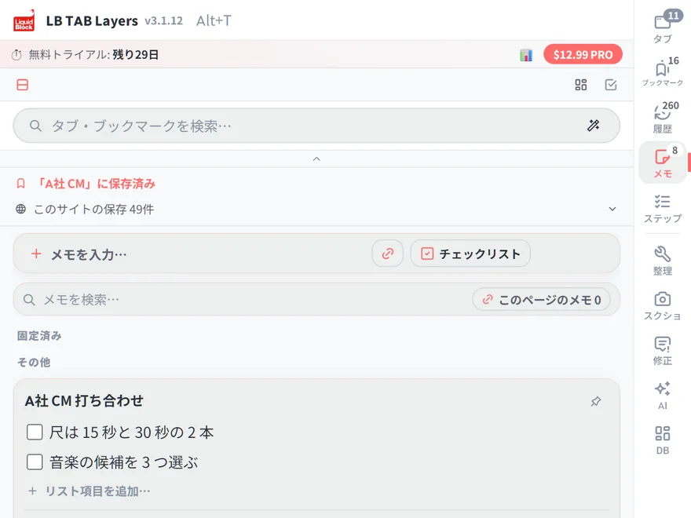
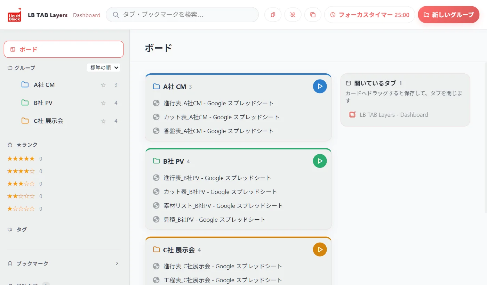
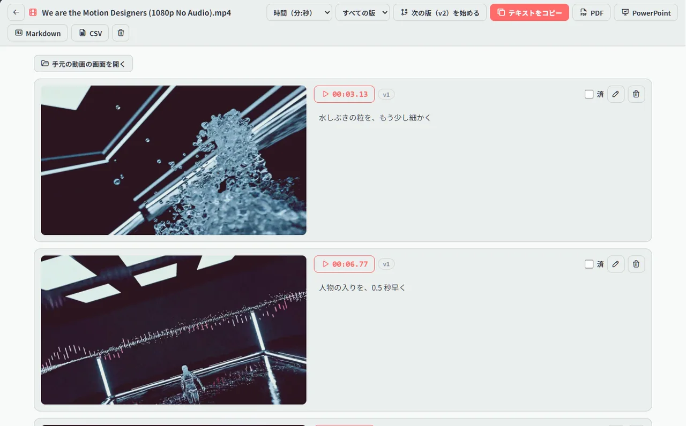

あのページ、
どこだっけ。
- 開きっぱなし閉じたら戻れない気がして、閉じられない。
- 探しまわるタブの海を、毎日5分、10分。
- ぜんぶ消える重くて再起動したら、タブがない。
手は動いているのに、仕事は進んでいない。
そんな時間を、なくします。
ブックマークとタブを、ひとつの画面で同時に管理。
タブは「今」。ブックマークは「引き出し」。
仕事のタブを案件ごとにしまって、まとめて開く。
Alt+T で、いつでも開けます。
案件が重なると、タブは 11 本。
実際の画面です（Chrome の右に LB TAB Layers）。
手は動いているのに、仕事は進んでいない。
そんな時間を、なくします。
あとで使うものは、引き出しへ。
やることと、とっておくもの。
分けるだけで、頭が軽くなります。

終わったタブを、まとめて閉じる。
案件のタブを、まとめて開く。
「めーる」で、Gmail が出てくる。

ブラウザの横に、いつも同じ画面。
上にブックマーク、下に今のタブ。
行ったり来たりしなくても、ぜんぶ見えます。
Alt+T を押せば、どのページからでも開きます。

しまう先は、Chrome のブックマークです。
だから、安心して閉じられます。
Chrome ウェブストアのレビューより
仕事で一時的に使うサイトなどをまとめておけるのが便利だと思った。グループでまとめて消せるのがいい。ブックマークをいちいち登録するよりはずっと楽。
今まで気が付けばとんでもない数のタブが増えていって、見たいページを探すのに苦労していました。UIがわかりやすくて整理が苦手な人でも気楽に使えると思います。
タブ増やしすぎるとPC遅くなるしな〜と思いつつ放置してた問題の解決策になるかも。フォルダー分けする作業が気分的にもスッキリして気持ちがいい。
1回は数十秒。でも、毎日何十回もやっています。
浮いた時間を、考えることに使ってください。
手元の動画ファイルでの画面です。YouTube でも、同じ流れで書けます。
動画を上げ直さなくても、ブラウザで見ているその動画に書けます。YouTube、Vimeo、Google ドライブ、Web ページに埋め込まれた動画。
映像をつくる会社が、自分たちの修正のやりとりのために作りました。
最初は、タブとブックマークだけで十分です。
必要になったとき、すぐ隣にあります。



使うほど、メダルがたまります。はじめての操作には、小さなお祝いも。
入れたら、すぐ使えます。
保存先は、あなたの Chrome のブックマークです。
すべての機能を30日使ってから、決めてください。2026年中のご購入は、1回払いの永続ライセンスです。

Liquid Block は、映像とモーショングラフィックスをつくる会社です。企画書の資料、オンラインのツール、たくさんの AI。制作の現場は、タブであふれます。
探す、開き直す、作り直す。そんな作業に、考える時間を取られたくなくて、自分たちのために作りました。
はい。保存、検索、まとめて開く・閉じるは、無料で使えます。最初の30日は、すべての機能を試せます。（2026年11月に新しくなった版より前に入れた方は、これまでどおり 90 日です）PRO は、この30日ですべての機能を使ってみてから決めてください。2026年12月31日までのご購入は、$12.99（税別）の1回払いで、永続ライセンスです。2027年1月1日からは、自動更新のサブスクリプション（3年 $39.99・年 $19.99・月 $3.33、税別）になります。
そのまま使えます。Chrome のブックマークを、そのまま取り込んで整理できます。
保存したタブは、Chrome のブックマークとして残ります。テーマや色などの設定は、消えます。
Google Chrome（114 以降）で使えます。Windows・Mac・Linux・ChromeOS に対応しています。Edge 版は準備中です。